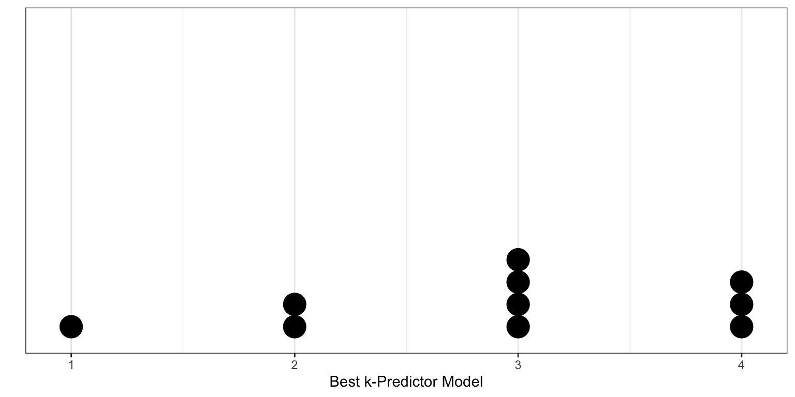

# Load libraries
library(modelr)
library(patchwork)
library(tidyverse)
library(tidymodels) # Loads broom, rsample, parsnip, recipes, workflow, tune, yardstick, and dials
# Import and view data
usa = read_csv("https://raw.githubusercontent.com/zief0002/redesigned-adventure/main/data/states-2019.csv")
# Create standardized variables after removing state names
z_usa = usa |>
select(-state) |>
scale(center = TRUE, scale = TRUE) |>
data.frame()
# View data
z_usa📝 Cross Validation
In the previous activity, we examined predictors of average life expectancy in a state, using data from states-2019.csv. We used several model building strategies and performance metrics to select and evaluate predictors. Unfortunately, we were evaluating the model/predictors using the same data that we used to build the model. This has several problems in practice, especially if you are using inferential metrics (p-values) to select the predictors:
- Increased Type I error rates: If you use p-values to select predictors, there are many tests you are examining across the model selection process. You probably need to adjust the p-values obtained from these tests to accommodate this.
- Overfit/Lack of generalization: The adopted model still has the potential to not perform well on future (out-of-sample) data.
One set of methods for dealing with these problems is to use cross-validation. The basic idea of cross-validation is to use one set of data to fit your model(s) and a completely separate set of data to evaluate the models’ performance. We will again use the states-2019.csv data to introduce methods of cross-validation. After importing the data, we will also standardize all the numeric variables.
From our previous notes, there were a several candidate models that we may have been considering based on their AICc values. In this set of notes we will consider the best k-predictor models that had an AICc value within four of the minimum AICc value. These candidate models include:
\[ \begin{split} \mathbf{M1:~} \mathrm{Life~Expectancy}_i &= \beta_1(\mathrm{Income}_i) + \epsilon_i \\[1ex] \mathbf{M2:~} \mathrm{Life~Expectancy}_i &= \beta_1(\mathrm{Income}_i) + \beta_2(\mathrm{Population}_i) + \epsilon_i \\[1ex] \mathbf{M3:~} \mathrm{Life~Expectancy}_i &= \beta_1(\mathrm{Income}_i) + \beta_2(\mathrm{Population}_i) + \beta_3(\mathrm{Illiteracy~Rate}_i) + \epsilon_i \\[1ex] \mathbf{M4:~} \mathrm{Life~Expectancy}_i &= \beta_1(\mathrm{Income}_i) + \beta_2(\mathrm{Population}_i) + \beta_3(\mathrm{Illiteracy~Rate}_i) + \beta_4(\mathrm{Murder~Rate}_i) + \epsilon_i \end{split} \]
Evaluating Predictors: Cross-Validation
In practice, we do not typically have two data sets at our disposal. Instead, we randomly split our sample data into two parts: a training set (used to fit the candidate models), and a validation set (used to evaluate the candidate models). Because we use a data set composed of different observations to evaluate the candidate models than we did to fit the candidate models, the resulting evaluation is not biased toward the data we used to fit the model (i.e., less overfit). Because of this, we get better indications about the generalizability of the models to out-of-sample data.
The essential algorithm for cross-validation is:
- Randomly divide the data into two sets of observations; training and validation data sets.
- Fit any candidate models using the training data.
- Use the coefficients obtained from the training data to “fit” the exact same models to the validation data to obtain fitted values or residuals.
- Use the fitted values/residuals to compute one or more measures of model performance for each candidate model.
- Use measures of model performance to select a “best” candidate model.
There are several metrics of model performance we can use to compare the candidate models. In cross-validation, the model performance metrics are simply compared to determine the “best” model; there are no significance tests performed.
Cross-Validated Mean Square Error (CV-MSE)
One very common metric used is the residual variance (a.k.a., mean square error). Because this is computed on the validation data rather than on the data used to fit the model, we refer to it as the Cross-Validated Mean Square Error (CV-MSE). The CV-MSE is:
\[ \mathrm{CV\mbox{-}MSE} = \frac{1}{n} \sum_{i=1}^n e_i^2 \]
where n is the number of observations in the validation set, and \(e_i\) are the residuals computed on the validation set. This value summarizes the model-data misfit in the validation data. Note that because this is a residual-based measure, lower values of CV-MSE correspond to better fitting models. Because this metric is computed on the validation data (data not used to initially fit the model), it is a better measure of how the model might perform in future samples.
Cross-Validation Example
To select a “best” model from our candidate models for the z_usa data, we can use cross-validation based on the following:
- Randomly divide the
z_usadata into two sets of observations; training and validation data sets. - Fit the four candidate models to the training observations.
- Use the estimated coefficients from those fitted models to obtain the fitted values and residuals for the observations in the validation data. Using these residuals, compute the CV-MSE for each candidate model.
- Select the model with the lowest CV-MSE.
Next, we will explore and carry out each of the steps in this algorithm to select a “best” model from our candidate models for the z_usa data.
Divide the Sample Data into a Training and Validation Set
There are many ways to do this, but here we will use the sample() function to randomly sample 35 cases (rows) from the z_usa data (about 2/3 of the data). These 35 cases will make up the training data. Then we will use the filter() function to select those cases. The remaining cases (those 17 observations not sampled) are put into a validation set of data.
# Make the random sampling replicable
set.seed(42)
# Select the cases to be in the training set
training_cases = sample(1:nrow(z_usa), size = 35, replace = FALSE)
# Create training data from the sampled cases
train = z_usa |>
filter(row_number() %in% training_cases)
# Create validation data from the remaining cases
validate = z_usa |>
filter(!row_number() %in% training_cases)Fit the Candidate Models to the Training Data
We now fit the four candidate models to the observations in the training data.
lm.1 = lm(life_expectancy ~ -1 + income, data = train)
lm.2 = lm(life_expectancy ~ -1 + income + population, data = train)
lm.3 = lm(life_expectancy ~ -1 + income + population + illiteracy, data = train)
lm.4 = lm(life_expectancy ~ -1 + income + population + illiteracy + murder, data = train)Use the Coefficients from the Fitted Models and the Validation Data to Obtain Fitted Values, Residuals, and CV-MSEs
Now we can obtain the predicted life expectancy for the observations in the validation data based on the coefficients from the models fitted to the training data. These vectors of fitted values can be used to compute the residuals for the validation observations, which in turn can be used to compute the CV-MSE.
# Get the predicted values for the validation data
yhat_1 = predict(lm.1, newdata = validate)
yhat_2 = predict(lm.2, newdata = validate)
yhat_3 = predict(lm.3, newdata = validate)
yhat_4 = predict(lm.4, newdata = validate)
# Compute residuals and CV-MSE
sum((validate$life_expectancy - yhat_1) ^ 2) / nrow(validate)[1] 0.7349516sum((validate$life_expectancy - yhat_2) ^ 2) / nrow(validate)[1] 0.7483797sum((validate$life_expectancy - yhat_3) ^ 2) / nrow(validate)[1] 0.8547222sum((validate$life_expectancy - yhat_4) ^ 2) / nrow(validate)[1] 0.8968336Select Candidate Model with the Lowest CV-MSE
Since the CV-MSE is a measure of model misfit, the candidate model having the smallest CV-MSE is the model that should be adopted. In this case, the values for the CV-MSE suggest adopting the single predictor model.
| Model | CV-MSE |
|---|---|
| 1-Predictor Model | 0.735 |
| 2-Predictor Model | 0.748 |
| 3-Predictor Model | 0.855 |
| 4-Predictor Model | 0.897 |
Leave-One-Out Cross-Validation
There are two major problems with the cross-validation we just performed.
- The estimate of the CV-MSE is highly dependent on the observations chosen to be in the training and validation sets. This is illustrated in the figure below which shows the CV-MSE values for the four models for 10 different random splits of the data. Some of these splits support adopting the first candidate model, other splits support adopting the second candidate model, while others support adopting the third or even the fourth candidate models!

- Only a subset of the observations (those in the training set) are used to initially fit the model. Since statistical methods tend to perform worse when trained on fewer observations, this suggests that the CV-MSE may tend to overestimate the error rate (model accuracy measure) for the model fit.
Leave-one-out cross-validation (LOOCV) is one method that can be used to overcome these issues. The algorithm for performing LOOCV is:
- Hold out the ith observation as your validation data (a single observation) and use the remaining \(n-1\) observations as your training data.
- Fit all candidate models to the training data.
- Use the estimated coefficients from those fits to compute the \(\mathrm{CV\mbox{-}MSE}_i\) using the validation data.
- Repeat Steps 2–4 for each observation.
We then have n estimates of the CV-MSE that can be averaged to get an overall estimate for the CV-MSE. That is,
\[ \mathrm{CV\mbox{-}MSE} = \frac{1}{n} \sum_{i=1}^n \widehat{\mathrm{CV\mbox{-}MSE}}_i \]
where \(\widehat{\mathrm{CV\mbox{-}MSE}}_i\) is the estimated CV-MSE based on the validation set composed of the ith observation. Since the validation dataset is composed of a single observation (\(n=1\)), \(\mathrm{CV\mbox{-}MSE}_i\) is simply the squared residual value for the validation observation. That is,
\[
\begin{split}
\widehat{\mathrm{CV\mbox{-}MSE}}_i = \frac{1}{n} \sum_{i=1}^n e_i^2 \\[0.5em]
= \frac{1}{1} \sum_{i=1}^1 e_i^2 \\[0.5em]
= e_i^2
\end{split}
\]
Function to Carry Out LOOCV
To carry out LOOCV, we will write a function that computes \(\widehat{\mathrm{CV\mbox{-}MSE}}_i\) for each model given a particular case.
# Function to compute CV-MSE for LOOCV
cv_mse_i = function(case_index){
# Create training and validation data sets
train = z_usa |> filter(row_number() != case_index)
validate = z_usa |> filter(row_number() == case_index)
# Fit models to training data
lm.1 = lm(life_expectancy ~ -1 + income, data = train)
lm.2 = lm(life_expectancy ~ -1 + income + population, data = train)
lm.3 = lm(life_expectancy ~ -1 + income + population + illiteracy, data = train)
lm.4 = lm(life_expectancy ~ -1 + income + population + illiteracy + murder, data = train)
# Compute fitted value for validation data
yhat_1 = predict(lm.1, newdata = validate)
yhat_2 = predict(lm.2, newdata = validate)
yhat_3 = predict(lm.3, newdata = validate)
yhat_4 = predict(lm.4, newdata = validate)
# Compute CV-MSE_i for each model
cv_mse_1 = (validate$life_expectancy - yhat_1) ^ 2
cv_mse_2 = (validate$life_expectancy - yhat_2) ^ 2
cv_mse_3 = (validate$life_expectancy - yhat_3) ^ 2
cv_mse_4 = (validate$life_expectancy - yhat_4) ^ 2
# Output a data frame
return(data.frame(cv_mse_1, cv_mse_2, cv_mse_3, cv_mse_4))
}
# Test function on Case 1
cv_mse_i(1)Then we can use this function to compute the four \(\widehat{\mathrm{CV\mbox{-}MSE}}_i\) values for each case in the data. We set up a data frame that includes a column called case that has each case number in the data. Then we use rowwise() to operate on each row separately and mutate() a new column by applying our cv_mse_i() function using map(). This creates a list column where the contents of each cell in the column is actually a list; in our case a data frame of four columns. Finally, we use unnest() to take the contents of the list column and spread them out into separate columns.
# Apply cv_mse_i() function to all cases
my_cv_mse = data.frame(case = 1:52) |>
rowwise() |>
mutate(
cv_mse = map(case, cv_mse_i) #New list column that includes the data frame of output
) |>
unnest(cols = cv_mse) #Turn list column into multiple columns
# View output
my_cv_mseAlternative Programming: Use a for() Loop
Alternatively, we could also have used a for() loop to carry out the LOOCV. Here is some example syntax (not run):
# Set up empty vector to store results
mse_1 = rep(NA, 52)
mse_2 = rep(NA, 52)
mse_3 = rep(NA, 52)
mse_4 = rep(NA, 52)
mse_5 = rep(NA, 52)
# Loop through the cross-validation
for(i in 1:nrow(z_usa)){
train = z_usa |> filter(row_number() != i)
validate = z_usa |> filter(row_number() == i)
lm.1 = lm(life_expectancy ~ -1 + income, data = train)
lm.2 = lm(life_expectancy ~ -1 + income + population, data = train)
lm.3 = lm(life_expectancy ~ -1 + income + population + illiteracy, data = train)
lm.4 = lm(life_expectancy ~ -1 + income + population + illiteracy + murder, data = train)
yhat_1 = predict(lm.1, newdata = validate)
yhat_2 = predict(lm.2, newdata = validate)
yhat_3 = predict(lm.3, newdata = validate)
yhat_4 = predict(lm.4, newdata = validate)
mse_1[i] = (validate$life_expectancy - yhat_1) ^ 2
mse_2[i] = (validate$life_expectancy - yhat_2) ^ 2
mse_3[i] = (validate$life_expectancy - yhat_3) ^ 2
mse_4[i] = (validate$life_expectancy - yhat_4) ^ 2
}
# Create data frame of results
my_cv_mse = data.frame(
case = 1:52,
cv_mse_1 = mse_1,
cv_mse_2 = mse_2,
cv_mse_3 = mse_3,
cv_mse_4 = mse_4
)Select Model with Lowest CV-MSE
We can now compute the average CV-MSE for each of the candidate models and select the candidate model with the lowest average CV-MSE.
# Compute average CV-MSE
my_cv_mse |>
select(-case) |>
summarize_all(mean)The LOOCV results suggest that we adopt the three-predictor model; it has the smallest average CV-MSE. Since LOOCV method is less biased than simple cross-validation (it trains the models on a much larger set of observations) its results are more believable than those from the simple cross-validation. Another advantage of LOOCV is that it will always produce the same results as opposed to simple cross-validation) since there is no randomness in producing the training and validation datasets.
CV-MSE
|
||
|---|---|---|
| Model | Simple CV | LOOCV |
| 1-Predictor Model | 0.735 | 0.832 |
| 2-Predictor Model | 0.748 | 0.807 |
| 3-Predictor Model | 0.855 | 0.769 |
| 4-Predictor Model | 0.897 | 1.124 |
Computing the CV-MSE under LOOCV: A Shortcut for OLS Models
LOOCV can be computationally expensive when you sample is very large; we have to fit the candidate models n times. It turns out, however, that models fit with OLS, can give us the LOOCV results using the following formula:
\[ \mathrm{CV\mbox{-}MSE} = \frac{1}{n} \sum_{i=1}^n \bigg(\frac{e_i}{1-h_{ii}}\bigg)^2 \]
where \(\hat{y}_i\) is the ith fitted value from the original least squares fit, and \(h_{ii}\) is the leverage value. This is similar to the model (biased) MSE, except the ith residual is divided by \(1 − h_{ii}\). Below, we compute the LOOCV CV-MSE for the three-predictor candidate model
# Compute CV-MSE for Candidate Model 3
lm.3 = lm(life_expectancy ~ -1 + income + population + illiteracy, data = z_usa)
# Augment the model to get e_i and h_ii
out.3 = augment(lm.3)
# Compute CV-MSE for best three-predictor model
1 / 52 * sum((out.3$.resid / (1 - out.3$.hat))^2)[1] 0.7686342k-Fold Cross-Validation
LOOCV is a very general method, and can be used with any kind of modeling. For example we could use it with logistic regression, or mixed-effects analysis, or any of the methods you have encountered in your statistics courses to date. That being said, the shortcut formula does not hold for all these methods, so, outside of OLS regression, the candidate models will actually need to be fitted n times. This can, as pointed out earlier, be quite computationally expensive.
One alternative to LOOCV is k-fold cross-validation. The algorithm for k-fold cross-validation is:
- Randomly divide the data into k groups or folds.
- Hold out the ith fold as your validation data and use the remaining \(k-1\) folds as your training data.
- Fit all candidate models to the training data.
- Use the estimated coefficients from those fits to compute \(\mathrm{CV\mbox{-}MSE}_i\) using the validation data.
- Repeat Steps 2–4 for each fold.
We then have k estimates of the MSE that can be averaged to get the overall CV-MSE.
\[ \mathrm{CV\mbox{-}MSE} = \frac{1}{k} \sum_{j=1}^k \widehat{\mathrm{CV\mbox{-}MSE}}_j \]
where \(\widehat{\mathrm{CV\mbox{-}MSE}}_j\) is the estimated CV-MSE based on the jth validation set. From this algorithm, it is clear that LOOCV is a special case of k-fold cross-validation in which k is set to equal n. In practice we typically use \(k=5\) or \(k=10\).
We can carry out k-fold cross-validation by using the crossv_kfold() function from the {modelr} package. This function takes the argument k= to indicate the number of folds. Here is some example syntax to carry out a 10-fold cross-validation:
# Set seed for reproducible results
set.seed(100)
# Divide data into 10 folds
my_cv = z_usa |>
crossv_kfold(k = 10)
# View output
my_cvThe output of cross_kfold() is a tibble/data frame with three columns: train, test, and .id. The first two columns are named lists of resample objects. These contain references to the row numbers used in the training and test data sets.
# View rows used in first fold (train set)
my_cv$train[[1]]<resample [46 x 8]> 1, 2, 3, 4, 5, 6, 7, 8, 9, 10, ...Then we will use the map() and map2_dbl() functions from the {purrr} package to fit a model to the training (train) data and find the MSE on the validation (test) data created from the crossv_kfold() function. We will have to carry this out for each of the candidate models.
For more detailed information about using the purrr functions, see Jenny Bryan’s fantastic purrr tutorial.
# Best 1-predictor model
cv_1 = my_cv |>
mutate(
model = map(train, ~lm(life_expectancy ~ 1 + income, data = .)),
MSE = map2_dbl(model, test, modelr::mse),
k = 1
)
# Best 2-predictor model
cv_2 = my_cv |>
mutate(
model = map(train, ~lm(life_expectancy ~ 1 + income + population, data = .)),
MSE = map2_dbl(model, test, modelr::mse),
k = 2
)
# Best 3-predictor model
cv_3 = my_cv |>
mutate(
model = map(train, ~lm(life_expectancy ~ 1 + income + population + illiteracy, data = .)),
MSE = map2_dbl(model, test, modelr::mse),
k = 3
)
# Best 4-predictor model
cv_4 = my_cv |>
mutate(
model = map(train, ~lm(life_expectancy ~ 1 + income + population + illiteracy + murder, data = .)),
MSE = map2_dbl(model, test, modelr::mse),
k = 4
)Once we have the results, we can stack these into single data frame and then use group_by() and summarize() to obtain the CV-MSE estimates.
rbind(cv_1, cv_2, cv_3, cv_4) |>
group_by(k) |>
summarize(
cv_mse = mean(MSE)
)The results of carrying out the 10-fold cross-validation suggest that we adopt the best two- or three-predictor model.
CV-MSE
|
|||
|---|---|---|---|
| Model | Simple CV | LOOCV | 10-Fold CV |
| 1-Predictor Model | 0.735 | 0.832 | 0.885 |
| 2-Predictor Model | 0.748 | 0.807 | 0.859 |
| 3-Predictor Model | 0.855 | 0.769 | 0.831 |
| 4-Predictor Model | 0.897 | 1.124 | 1.22 |
Using k-fold cross-validation is computationally less expensive so long as \(k<n\). But this computational gain has a cost in that the results are again dependent on the k random splits. This variation, however, is less than that in the single split simple cross-validation. We can also alleviate some of this by fitting the k-fold cross-validation several times and averaging across the results to get the CV-MSE estimate.
There are several other R packages that will also fit a k-fold cross-validation (e.g., {DAAG}).
Model Selection
The different model selection methods suggest we adopt the following candidate models:
| Method | Model |
|---|---|
| FS (t-value) | Income, Population, Illiteracy, Murder |
| FS (AIC) | Income, Population, Illiteracy |
| BE (R2) | Income, Population, Illiteracy |
| All Subsets (AICc) | Income, Population, Illiteracy |
| Simple CV | Income |
| Leave-One-Out CV | Income, Population, Illiteracy |
| 10-Fold CV | Income, Population, Illiteracy |
While the different CV methods can suggest different models, this is usually less problematic when the sample size is larger; we only have 52 observations in the z_usa data.
The LOOCV and k-fold CV are better suited for considering how the model will perform on future data sets, so, here, I would adopt the model that includes income, population, and illiteracy rate. To get the coefficient estimates, we fit whichever model we adopt to the FULL data set (with all the observations) as this will give us the “best” estimates.
# Fit model
lm.3 = lm(life_expectancy ~ -1 + income + population + illiteracy, data = z_usa)
# Get model-level output
glance(lm.3)# Get coefficient-level output
tidy(lm.3)Reporting Results from a Cross-Validation
When we report the results of a regression model evaluated using cross-validation, there are some subtle differences in what is reported. At the model-level, we report the \(R^2\) from the adopted model fitted to the full-data. We also report the CV-MSE as a measure of the model error for future observations (generalized error).
At the coefficient-level we typically report the coefficient estimates and standard errors based on fitting the adopted model to the full data. However, we DO NOT REPORT NOR INTERPRET P-VALUES. The p-values do not take into account that the model was selected using cross-validation. Because of this they are incredibly misleading. As with any model, interpretations should also be offered, again typically by way of providing a plot of the fitted model to help facilitate these interpretations. For example:
The regression model using income, population, and illiteracy rate to predict variation in life expectancy was selected using 10-fold cross-validation (CV-MSE = 0.830). The model explains 34.9% of the variation in life expectancy. The fitted equation is:
\[ \begin{split} \hat{\mathrm{Life~Expectancy}}_i = &0.488(\mathrm{Income}_i) + 0.392(\mathrm{Population}_i) \\ &- 0.310(\mathrm{Illiteracy~Rate}_i) \end{split} \]
where, the outcome and all predictors are standardized. This model suggests moderate, positive, partial effects of both income and population and a moderate negative effect of illiteracy rate on life expectancy.
Relationship between Information Criteria and Cross-Validation
In EPsy 8252, we learned about using information criteria for model selection. In particular, we used AIC, BIC, and AICc for model selection. It turns out the AIC-based model selection and cross-validation are asymptotically equivalent (Stone, 1977). Shao (1997) also proved that for linear models, using BIC for model selection is asymptotically equivalent to leave-v-out cross-validation when
\[ v = n\bigg(1 - \frac{1}{\ln (n) - 1}\bigg) \]
As a practical note, computer simulations have suggested that the results from using AICc for model selection will, on average, be quite similar to those from cross-validation techniques. As such, AICc can be a useful alternative to the computationally expensive cross-validation methods. However, using AICc does not provide a measure of the model performance (MSE) in new datasets like cross-validation does.
# Fit models to all data
lm.1 = lm(life_expectancy ~ -1 + income, data = z_usa)
lm.2 = lm(life_expectancy ~ -1 + income + population, data = z_usa)
lm.3 = lm(life_expectancy ~ -1 + income + population + illiteracy, data = z_usa)
lm.4 = lm(life_expectancy ~ -1 + income + population + illiteracy + murder, data = z_usa)
# Load library
library(AICcmodavg)
# Get AICc for all models
aictab(
cand.set = list(lm.1, lm.2, lm.3, lm.4),
modnames = c("Best 1-Predictor", "Best 2-Predictor", "Best 3-Predictor", "Best 4-Predictor")
)The model with the lowest AICc is, indeed, the three-predictor model. There is also some evidence for the four-predictor model given the AICc weight.
References
Shao, J. (1997). An asymptotic theory for linear model selection. Statistica Sinica, 7, 221–264.
Stone, M. (1977). An asymptotic equivalence of choice of model by cross-validation and akaike’s criterion. Journal of the Royal Statistical Society, Series B, 39, 44–47.